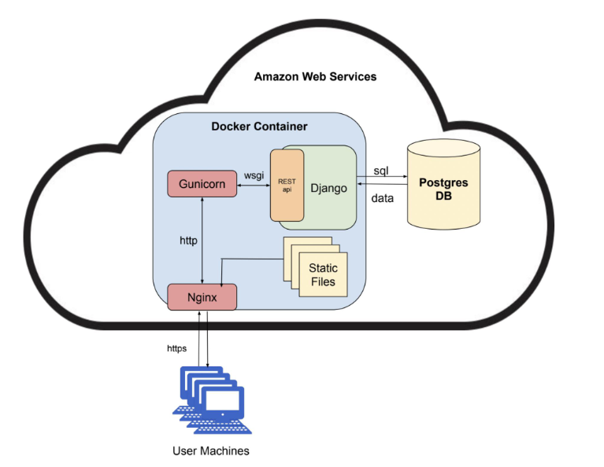
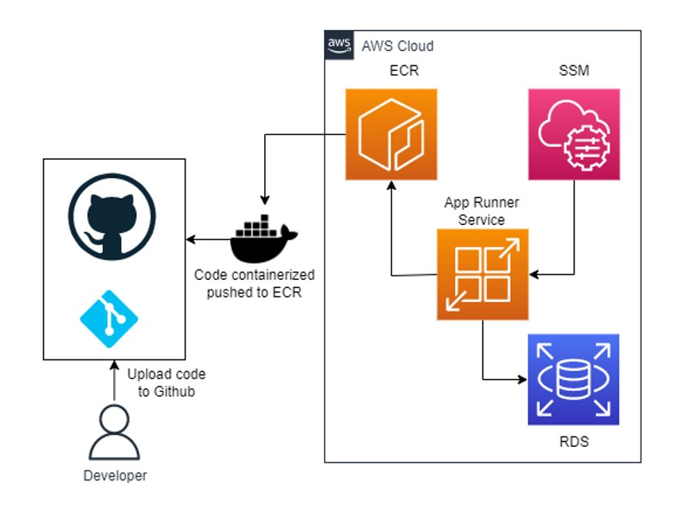

About The Project
My small team partnered with the GU Biochemistry department to create a web app which aids students in learning Biochemical pathways.
To achieve this, we built an interactive graph based tool to model the complex interactions of a biochemical pathway in a simplified manner.
Our tool would allow the student to build their own pathways and simulate how a change in an input into the system (substrate concentration) can propagrate through the the rest of the system.
The teachers will also have special permission to add "verified pathways" for all students to be able to check their work against.
Project Stack Diagram
Frontend Tools:
- React
- Bootstrap
- React Flow
- React Router
Backend Tools:
- Django
- Django REST Framework
- NGINX
- Gunicorn
- Postgres
- Docker

Cloud Diagram
This diagram shows how our code gets containerized and deployed to our AWS infrastructure.
On merge to main, our code goes through our Github Actions CI/CD pipeline which results in a dockerized app which is pushed to AWS ECR.
At Which point the app runner service will grab the new container and run it.
Our app will have access to AWS SSM which houses our sensitive information as well as our AWS RDS Postgres instance.

My Contributions
Technical
Even though I worked on many parts of this project, as did the rest of my group, my work on this project was generally focused building out the frontend application and pushing the project to AWS.
Non-technical
A major portion of the project which our group had to undertake was speaking with stakeholders, understanding their needs for the project, and making sure our design was well thought out and documented.
It was very important to us a group to set a good foundation for the project knowing that this project will be inherited.
On top of machine generated documentation, we also wrote design docs which explained the intention behind the decisions that we made and how to get started with our code.
Something that was also important to us was making sure that the inteded audience was actually getting something out of using our app.
To ensure this we regularly met with our sponser to demo our work to ensure we were on the right track.
We also rolled our app out to be used by students to gather data on how our app is used and how it performed.